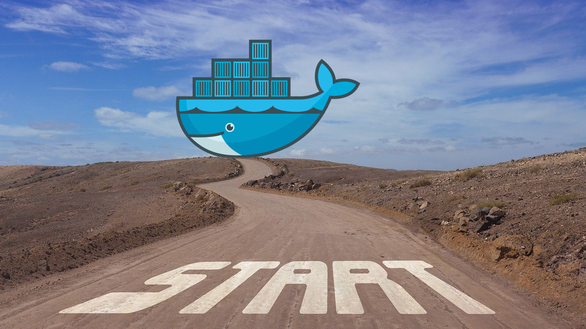

Szkolenie Docker od zera

Szkolenie Docker od zera jest to wprowadzenie do Dockera dla zespołów, które zaczynają z niego korzystać.
Objaśniamy teorię, ale skupiamy się na ćwiczeniach praktycznych.
Z Dockerem deploy systemu jest o wiele tańszy, szybszy i przyjemniejszy, a co za tym idzie mniej błędogenny. Docker służy również jako świetne usprawnienie codziennej pracy, dzięki któremu łatwo zautomatyzujesz różne zadania.
Po warsztatach z Dockera będziesz rozumiał zasadę działania poszczególnych mechanizmów i etapy tworzenia obrazu Dockerowego. Z nowymi umiejętnościami, poradzisz sobie zarówno z rozpoczęciem nowego projektu w kontenerach, jak i z dostosowaniem istniejącego projektu do wymagań Dockera.
Szkolenie da Ci umiejętności, dzięki którym unikniesz wielu kosztownych i stresujących błędów, na które skazana jest samodzielna nauka, np. źle zaprojektowany obraz powodujący problemy na produkcji.
Ponieważ po warsztatach bardzo ważne jest codzienne stosowanie nowych umiejętności, każdy uczestnik otrzyma dostęp do zamkniętego kanału na slacku GitWarsztatowym, na którym trenerzy zdalnie pomagają w napotkanych sytuacjach i odpowiadają na pytania. Dodatkowo udostępniamy również wersję offline prezentacji i materiałów, aby móc korzystać z nich w codziennej pracy.